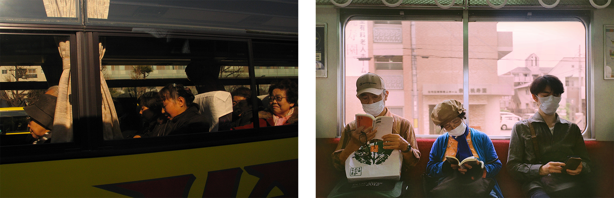
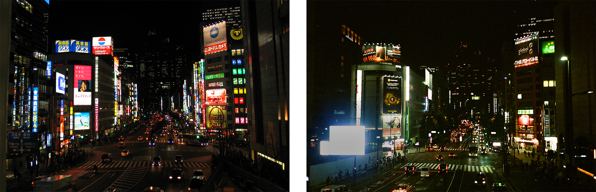
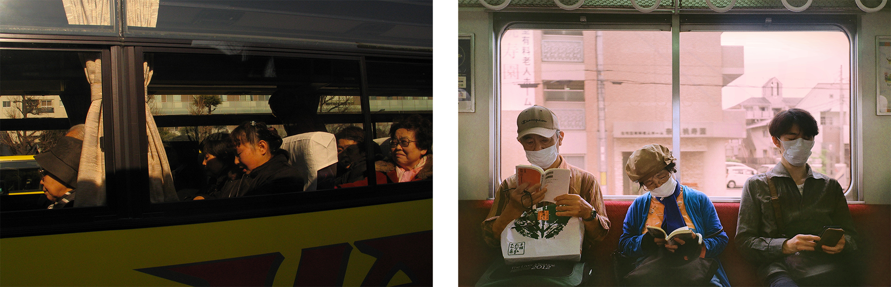
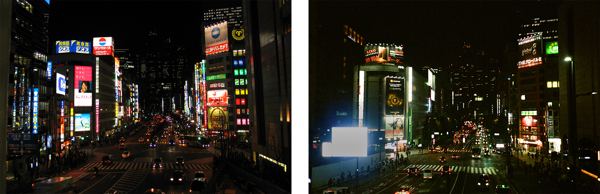

2005/24
photography,
tokyo 2024.


 





Almost 20 years ago, my mother, Ana Anes, took a trip to Japan, documented in photographs taken by her and her friend Teresa Alves. These photographs, together with the Japanese toys I received, gave me a great desire to visit Japan.
This year, I was able to spend three months in Tokyo and visit other cities in the country, where I tried to make a photographic documentation parallel to that of my mother. I tried to reproduce some of the photographs, locating the exact places, but I also created less immediate links between the photographs from 2005 and those from 2024.